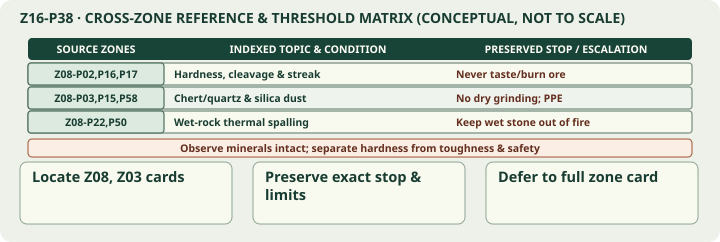

Z16-P38 · Field reference atlas · New manuscript
Non-Destructive Mineral Properties and Conchoidal Fracture Index
Synthesize Z08 ordered hardness, luster, streak, cleavage-vs-fracture screening, and thermal-spalling exclusions.
When it applies · Non-destructive field mineral observation without tasting, burning, or dry grinding.
Equipment · Full offline reader (Z08, Z03), primary zone cards, and local emergency and agency references.

Actions
- Apply ordered non-destructive screening—daylight luster, cleavage-plane angle tilt, Mohs fingernail, copper, steel scratch steps, and porcelain streak—rather than unreliable bulk color (Z08-P02, Z08-P16, Z08-P17).[A04, R04]
- Distinguish hard conchoidal-fracturing silica rocks (chert, flint, jasper, quartz, Mohs ~7) from softer carbonates (calcite, dolostone) and blocky feldspars, micas while enforcing eye and silica-dust boundaries (Z08-P03, Z08-P15, Z08-P18, Z08-P19).[A04, R04, R05, R06]
- Keep wet, river-sourced, porous sandstone, shale, and unverified cobbles completely out of campfires and boiling setups due to violent steam spalling (Z08-P22, Z03-P01).[A04, R13]
Failure recognition · Heating creek cobbles, breaking fibrous metamorphic veins, or dry-chipping quartz without PPE causes eye trauma, spalling injuries, and silica exposure.[R06, R07, R13]
Verify · Non-destructive checks, silica, asbestos exclusions, and zero unverified fire-stone use stay enforced.[R04, R06, R13]
Stop or change course · Stop handling immediately if fibrous veins, bright heavy metallic crusts, or visible mineral dust appear.[R06, R07, R14]
Evidence and editorial notes
- A04 · Minnesota DNR · Minnesota Geology and Glacial History Overview (Current web edition)
- Section: Geological and natural-material cross-zone lookup · Conditions: Linking Z08 materials with Z02 shelter, Z03 fire, Z09 tools, and Z11 compass limits
Support: Material cross-references preserve dust/silica hazards, wet-rock spalling stops, iron-rock compass deflection, and public-land collecting prohibitions.
Limitations: Material summaries never imply structural load ratings or chemical cookware safety. · Conflicting evidence: None noted.
Editorial note: Anchors Z16 materials index. · Specialist reviewer: Geologist and materials reviewer
Primary source · checked 2026-11-25 - R04 · USGS · Collecting Rocks: Rock Classes and Mineral Property Basics (USGS GIP)
- Section: Hardness, luster, streak, and fracture vs cleavage · Conditions: Non-destructive mineral observation with simple field cues
Support: Scratch hardness, unglazed streak, luster, and fracture-versus-cleavage patterns narrow candidate mineral groups.
Limitations: Field scratch checks cannot establish chemical purity, trace heavy metals, or absence of hazardous fibers. · Conflicting evidence: Color alone is unreliable across quartz, calcite, and feldspar varieties.
Editorial note: Core Z08 mineral screening basis. · Specialist reviewer: Mineralogist
Primary source · checked 2026-11-25 - R05 · Minnesota DNR · Rocks and Minerals of Minnesota Educational Guide (Current web edition)
- Section: Chert, jasper, agate, and quartz occurrences · Conditions: Upper Midwest siliceous cobbles and sedimentary nodules
Support: Cryptocrystalline quartz varieties (chert, flint, jasper, agate) are hard silica rocks showing conchoidal fracture rather than planar cleavage.
Limitations: Visual similarity to fine-grained quartzite, basalt, or glass does not confirm thermal stability or structural suitability. · Conflicting evidence: None noted.
Editorial note: Anchors Z08 siliceous stone identification. · Specialist reviewer: Geologist and materials specialist
Primary source · checked 2026-11-25 - R06 · NIOSH / CDC · Crystalline Silica Respiratory Dust Hazards (2024)
- Section: Crystalline silica dust respiratory hazard · Conditions: Any grinding, hammering, knapping, or crushing of quartz, chert, sandstone, or granite
Support: Fracturing or abrading silica-bearing stone generates respirable crystalline silica dust linked to silicosis and lung disease.
Limitations: Outdoor breeze does not eliminate breathing-zone dust; avoid dry grinding/crushing and use eye and respiratory protection in authorized instruction. · Conflicting evidence: None noted.
Editorial note: Mandatory Z08 silica/eye safety gate. · Specialist reviewer: Industrial hygienist and geologist
Primary source · checked 2026-11-25 - R07 · U.S. EPA · Learn About Asbestos and Naturally Occurring Mineral Fibers (2025)
- Section: Naturally occurring asbestos and fibrous minerals · Conditions: Outcrops, fibrous veins, serpentinite, and iron-formation rock
Support: Naturally occurring asbestiform mineral fibers pose severe inhalation risks if disturbed, broken, or abraded.
Limitations: Field sight alone cannot distinguish benign fibrous minerals from regulated asbestos; leave fibrous mineral veins undisturbed. · Conflicting evidence: None noted.
Editorial note: Mandatory Z08 mineral-fiber stop rule. · Specialist reviewer: Industrial hygienist and mineralogist
Primary source · checked 2026-11-25 - R13 · National Park Service · Rocks and Minerals Geological Overview (Current web edition)
- Section: Thermal shock, moisture spalling, and rock weathering · Conditions: Porous, laminated, or water-saturated stones exposed to heat or freeze-thaw
Support: Water-saturated, porous, or layered rocks can fracture violently when rapidly heated or subjected to freeze-thaw stress.
Limitations: Dry surface appearance does not prove internal pores are moisture-free; keep unverified rocks out of fires and hot vessels. · Conflicting evidence: None noted.
Editorial note: Reinforces Z03/Z08 wet-rock spalling stop. · Specialist reviewer: Geologist and fire safety reviewer
Primary source · checked 2026-11-25 - R14 · USGS · National Minerals Information Center and Mineral Commodities (Current web edition)
- Section: Metallic ores, sulfides, and heavy-metal mineral toxicity · Conditions: Unidentified metallic-luster minerals, tailings, or bright oxidized crusts
Support: Sulfide ores and metallic minerals can contain lead, arsenic, mercury, or copper compounds hazardous via dust or hand-to-mouth transfer.
Limitations: Do not taste, lick, burn, or process unidentified metallic or brightly crusted minerals; wash hands after handling. · Conflicting evidence: None noted.
Editorial note: Blocks hazardous mineral extraction/handling. · Specialist reviewer: Geochemist and toxicologist
Primary source · checked 2026-11-25
Source lineage · New manuscript (Z16 P20 material index) · Classification · New manuscript.